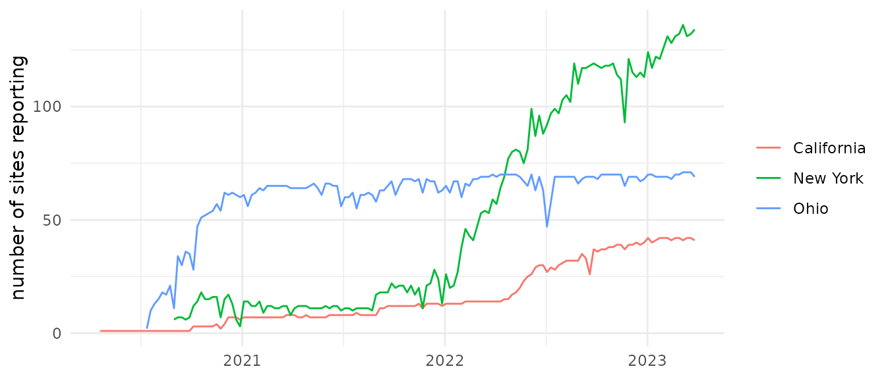
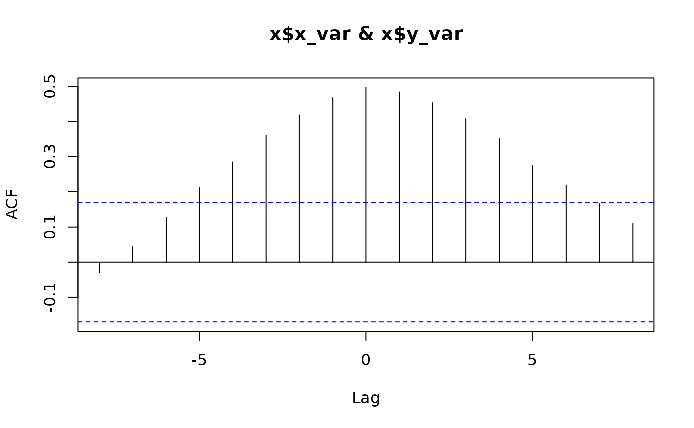
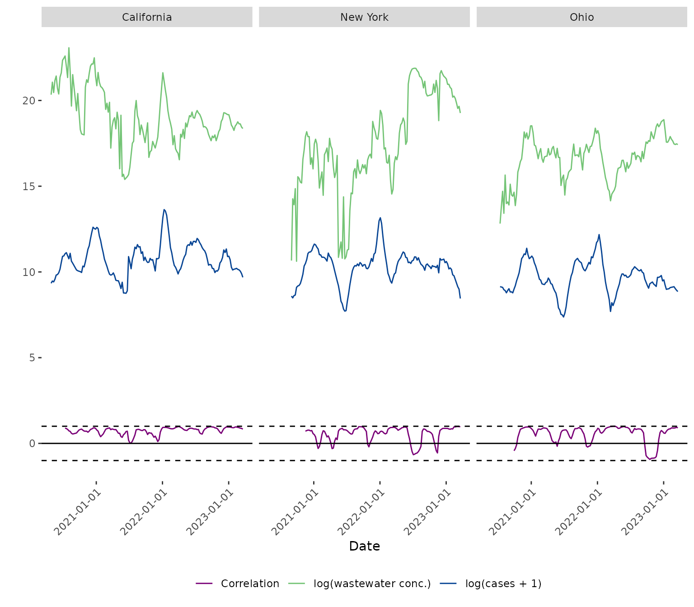

Case study: wastewater surveillance as a leading indicator for COVID-19 cases
Kylie Ainslie
2026-08-05
Source:vignettes/wastewater-surveillance.Rmd
wastewater-surveillance.RmdOverview
Since SARS-CoV-2 RNA sheds into wastewater from both symptomatic and
asymptomatic infections, wastewater concentration has been proposed as a
leading indicator for clinical case counts that is unaffected by testing
behaviour [1]. This motivates a specific
question that cross_corr() and rolling_corr()
are built to answer: by how many days or weeks does the
wastewater signal lead reported cases, and did that lead time and the
strength of the relationship hold up once clinical case counts became a
less reliable measure of true infections (most notably after
at-home rapid antigen tests became widely available in the US in early
2022, after which a growing share of infections were never reported to
public health authorities, and a specific wastewater concentration came
to correspond to substantially fewer reported cases than it had
previously [2])?
This case study demonstrates the same lag-detection and
rolling-correlation workflow as
vignette("china-mobility-rt"), applied to real, public
health surveillance data instead of the reproduction-number/mobility
data used there. It is a genuine test of the hypothesis above, not a
constructed example, so the results below are whatever the data show –
including where they complicate a tidy narrative.
Data
pika bundles two example datasets for this case study,
covering California, New York, and Ohio:
-
wastewater_data: weekly, state-level SARS-CoV-2 concentration in wastewater, built from site-level sample records published by the CDC National Wastewater Surveillance System (NWSS) [3]. Each state-week value is a population-weighted mean of the flow- and population-normalized concentration (copies per person per day) across all sites reporting that week. -
covid_case_data: weekly newly reported COVID-19 cases for the same three states, built from cumulative case counts published by The New York Times [4].
Both series run from early 2020 to 27 March 2023, the date the NYT repository stopped updating – which is also why this case study cannot look further forward than that.
| state | date | conc | n_sites | n_samples |
|---|---|---|---|---|
| California | 2020-04-20 | 680237018 | 1 | 3 |
| California | 2020-04-27 | 1412831516 | 1 | 3 |
| California | 2020-05-04 | 770626263 | 1 | 3 |
| California | 2020-05-11 | 1556279847 | 1 | 3 |
| California | 2020-05-18 | 2020815405 | 1 | 1 |
| state | date | cases |
|---|---|---|
| California | 2020-01-20 | 1 |
| California | 2020-01-27 | 4 |
| California | 2020-02-03 | 0 |
| California | 2020-02-10 | 1 |
| California | 2020-02-17 | 2 |
The number of sites contributing to each state-week grew substantially as NWSS expanded, from a single site in California in April 2020 to well over 100 sites per state by 2022-2023:
library(ggplot2)
ggplot(wastewater_data, aes(x = date, y = n_sites, colour = state)) +
geom_line() +
labs(x = NULL, y = "number of sites reporting", colour = NULL) +
theme_minimal()
Concentration spans several orders of magnitude, so we work on the log scale throughout, and similarly log-transform cases (adding 1 first, since some state-weeks have zero newly reported cases early in the pandemic):
Determining the optimal lag
cross_corr() searches over lags (in units of
rows of the input data – here, weeks, since both series are
already aggregated to one row per state per week) and returns, for each
group, the lag at which the cross-correlation between x_var
and y_var is highest, restricted to lags at or before zero
(i.e. x_var at or ahead of y_var). We treat
wastewater concentration as x_var and cases as
y_var, so a negative lag means wastewater leads cases.
lags <- cross_corr(
dat = data_joined,
date_var = "date",
grp_var = "state",
x_var = "log_conc",
y_var = "log_cases",
max_lag = 8
)


lags
#> # A tibble: 3 × 2
#> state lag
#> <chr> <dbl>
#> 1 California -1
#> 2 New York 0
#> 3 Ohio 0| state | lag |
|---|---|
| California | -1 |
| New York | 0 |
| Ohio | 0 |
Wastewater leads cases by one to two weeks in California and Ohio,
and is roughly contemporaneous with cases in New York. These sit toward
the shorter end of, but within, the range reported elsewhere: Peccia et
al. (2020) found wastewater led same-day case reports by 0-2 days and
led cases by their (later) reporting date by 6-8 days in New Haven,
Connecticut, and a systematic review of 133 reported wastewater-case
correlations across many studies found lead times of 2-24 days, with
correlation coefficients from -0.38 to 0.99 [1,5] – both our lag estimates and the
(state-level, log-log) correlation strengths we find later fall within
that broad published range, even though the specific catchments,
populations, and time periods differ from ours in ways that make an
exact match unlikely. To align the two series on this optimal lag, we
shift each state’s wastewater dates forward by -lag weeks
(i.e. lag rows, converted to days since our data is
weekly). The lag returned by cross_corr() is in
units of rows of the input data, not necessarily days or weeks – always
check the spacing of your own data before converting. This also
means cross_corr() implicitly assumes every row is evenly
spaced in time: California’s series is missing one week early on (during
the period when only a single site was reporting), so one pair of
consecutive rows there is 14 days apart rather than 7. With one such gap
out of roughly 150 weeks, the effect on the estimated lag is negligible,
but it is a real assumption worth checking in your own data before
trusting the returned lag.
Rolling correlation
With the series aligned on their optimal lag,
rolling_corr() calculates the Pearson correlation between
wastewater concentration and cases in a moving window, which lets us see
whether the strength of the relationship is stable over time rather than
assuming a single lag/correlation estimated across the whole series
applies throughout. We use an n = 12 (twelve-week, roughly
one quarter) window, a compromise between smoothing out single-week
noise and still resolving change over the three years of data.
data_corr <- rolling_corr(
dat = data_lagged,
date_var = "date",
grp_var = "state",
x_var = "log_conc",
y_var = "log_cases",
n = 12
)
plot_corr(
dat = data_corr,
date_var = "date",
grp_var = "state",
x_var = "log_conc",
y_var = "log_cases",
legend_labels = c("Correlation", "log(wastewater conc.)", "log(cases + 1)")
)
Did the relationship hold up as case-reporting quality declined?
At-home rapid testing became widely available in the US from around January 2022, after which an increasing share of infections were never reported to public health authorities. If that eroded the reliability of case counts as a measure of true infection burden, we would expect the rolling correlation between wastewater and cases to trend downward after early 2022.
data_corr %>%
filter(!is.na(roll_corr)) %>%
mutate(period = ifelse(date < as.Date("2022-03-01"), "pre-2022-03", "post-2022-03")) %>%
group_by(state, period) %>%
summarise(
mean_corr = round(mean(roll_corr), 2),
median_corr = round(median(roll_corr), 2),
.groups = "drop"
) %>%
arrange(state, period) %>%
kable()| state | period | mean_corr | median_corr |
|---|---|---|---|
| California | post-2022-03 | 0.86 | 0.89 |
| California | pre-2022-03 | 0.67 | 0.72 |
| New York | post-2022-03 | 0.54 | 0.83 |
| New York | pre-2022-03 | 0.55 | 0.67 |
| Ohio | post-2022-03 | 0.52 | 0.84 |
| Ohio | pre-2022-03 | 0.57 | 0.71 |
Contrary to that expectation, the rolling correlation does not show a systematic decline after March 2022 in any of the three states – if anything, the median correlation is similar or slightly higher in the later period. The rolling correlation is visibly noisy throughout the whole series in the plot above, with occasional weeks of weak or negative correlation in both periods, most likely reflecting genuine week-to-week volatility in a 12-week window (holiday reporting effects, changes in which sites reported that week) rather than a sustained regime change.
This does not contradict the published evidence that case
ascertainment declined – it is answering a different question. Boehm et
al. (2023) [2] directly studied three
California wastewater treatment plants before and after 1 May 2022 and
found a genuine divergence: a specific wastewater concentration
corresponded to a significantly lower reported case incidence after that
date than before (the intercept of a power-law relationship
between the two shifted; for example, at one plant it fell from 0.29 to
-0.66). Critically, they reported that the slope of that
relationship – how the two series move together – did not differ
significantly between the two periods at two of their three sites. That
is consistent with, not contrary to, what we find here: reported cases
can become systematically depressed in absolute level relative to true
infections (an ascertainment problem, which is what Boehm et
al. measured) while remaining a reasonably proportional,
still-correlated signal of relative week-to-week trends (which is what
rolling_corr() measures here). Our result is a state-level,
lower-resolution echo of theirs, not an independent replication – we
have not tested for an intercept shift the way they did.
One general caveat applies to this whole analysis: wastewater concentration and case counts are both smooth, wave-shaped epidemic curves, and any two series that share a similar wave shape will show substantial correlation even without a genuine leading-indicator relationship between them. Lagged and rolling correlation reduce this risk relative to a single contemporaneous correlation, but do not eliminate it – a shared “big wave, then a smaller wave” shape can inflate the correlation within a 12-week window regardless of the true lead time. This is a standard limitation of correlation-based lag detection on epidemic time series generally, not something specific to this dataset.
This is a useful result precisely because it complicates the tidy assumption: at the state level, aggregating across many counties and sewersheds, reported case counts appear to have remained a reasonably proportional – if biased – signal of underlying trends throughout the study period, even as absolute ascertainment almost certainly fell. Whether the same holds at a finer geographic resolution (individual sewersheds vs. county case counts) is a natural follow-up question, and one where a single overall lag/correlation estimate – rather than the rolling version used here – would have hidden the volatility entirely, and might have supported the “relationship degraded” narrative or its opposite depending on which weeks happened to dominate the estimate.